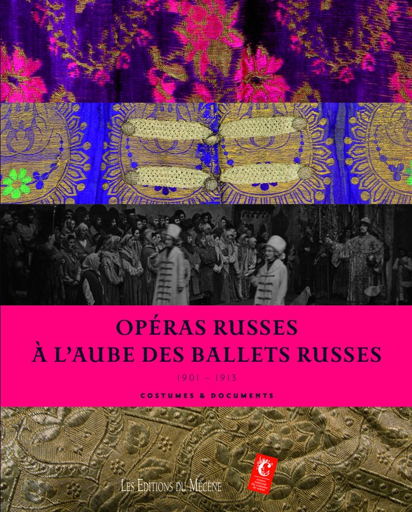

Catalogue · Ouvrage
Grand Prix du Livre d’Art · Musée d’Orsay
L’Opéra russe avant les ballets russes.
Un ouvrage sur l’opéra et les ballets russes, distingué par le Grand Prix du Livre d’Art du Musée d’Orsay et par le Grand Prix du beau-livre pour la musique de la SACEM.

Martine Kahane
L’Opéra russe avant les ballets russes
CommanditaireCentre national du costume de scène
Site officiel ↗
Site officiel ↗
ÉditeurLes Éditions du Mécène
ThèmeBallets russes · opéra · scène
DistinctionsGrand Prix du Livre d’Art — Musée d’Orsay · Grand Prix du beau-livre pour la musique — SACEM
AuteursMartine Kahane
DisponibilitéSur demande
Un ouvrage sur l’opéra et les ballets russes, distingué par deux récompenses : le Grand Prix du Livre d’Art du Musée d’Orsay et le Grand Prix du beau-livre pour la musique de la SACEM — deux des reconnaissances institutionnelles majeures du catalogue de la maison.
Demander des informationsQuestions fréquentes
Sur cet ouvrage.
01
Quelles distinctions a reçues L’Opéra russe avant les ballets russes ?
Le Grand Prix du Livre d’Art du Musée d’Orsay et le Grand Prix du beau-livre pour la musique de la SACEM.
02
Qui a écrit L’Opéra russe avant les ballets russes ?
L’ouvrage est signé Martine Kahane.
Autres ouvrages
Poursuivre la lecture.
D’autres titres du catalogue, à explorer dans le même esprit.